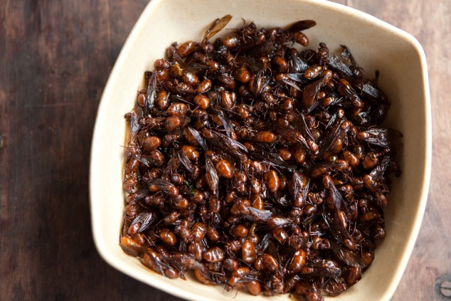

Hormigas culonas
Martes, 01 Noviembre 2017
Aunque no representan una gran novedad para los colombianos, es una de las curiosidades gastronómicas más llamativas para los foráneos. Originarios de la región de Santander, estos suculentos insectos de cola prominente son tostados vivos y sazonados con sal para que queden aptos para su consumo.

Gabriel Perilla: Es una comida muy tipica del santander, siempre que se visita ofrecen variedades de esta peculiar comida, saben a tostao...